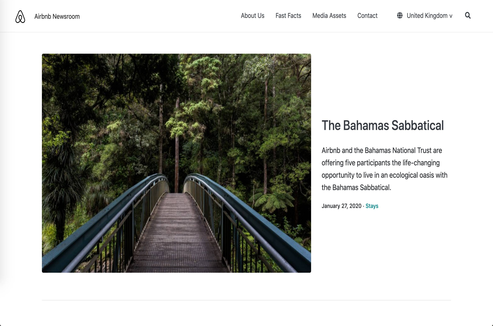

projects

Web Development
I am currently taking the full stack web development course @altacademy.com. This is one of the clone exercises I completed in the HTML/CSS development module.
I believe mastering the basics of web development will enable me to branch out my skillsets for a career in tech industry.
I believe mastering the basics of web development will enable me to branch out my skillsets for a career in tech industry.
since 2020 · Self-development
Lost & Found: Post 90s
I co-founded this campaign in 2014 with the aim to empower the generation of Post 90's to rethink their position as a person and as a future pillar of the society.
I was responsible for designing the one-day seminar involving guest speakers from all walks of life, ranging from retired government officials to high school dropouts turned successful businessman. I also designed and produced all promotional materials for the campaign. Visit our facebook page for more details.
I was responsible for designing the one-day seminar involving guest speakers from all walks of life, ranging from retired government officials to high school dropouts turned successful businessman. I also designed and produced all promotional materials for the campaign. Visit our facebook page for more details.
since 2014 · Thought Leadership